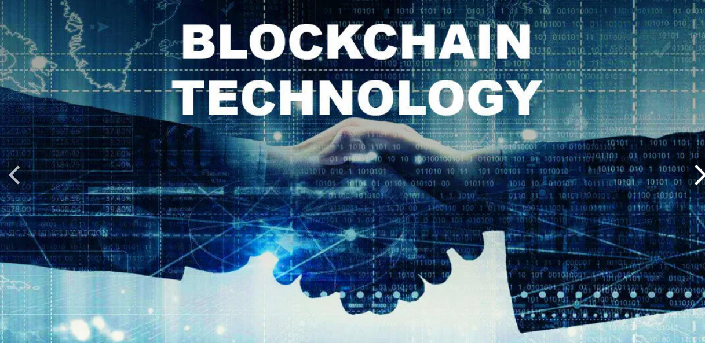

Что такое блокчейн?
Блокчейн — это технология распределенного реестра, где данные хранятся в виде цепочки блоков. Каждый блок содержит записи о транзакциях и связан с предыдущим блоком, что обеспечивает высокий уровень безопасности.
Особенности блокчейна:
- Децентрализация: данные хранятся на множестве узлов.
- Прозрачность: все транзакции доступны для проверки.
- Незыблемость: данные нельзя изменить задним числом.
Области применения:
- Криптовалюты: Биткойн, Эфириум и другие.
- Смарт-контракты: автоматизация выполнения соглашений.
- Цифровая идентификация: безопасное управление данными пользователей.
- Управление цепочками поставок: отслеживание продуктов от производства до потребителя.
Перспективы развития:
Блокчейн продолжает находить новые применения, включая децентрализованные финансы (DeFi), NFT (невзаимозаменяемые токены) и системы голосования.